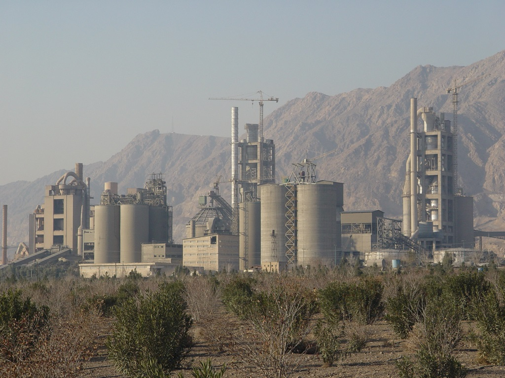

کاهش مصرف سيمان در بتن؛ نکات مهم و کلیدی
کاهش مصرف سيمان در بتن؛ نکات مهم و کلیدی
کاهش مصرف سیمان علاوه بر صرفه اقتصادی، موجب کاهش مصرف سوخ تهای فسیلی و آلودگی محیط زیست خواهد شد. بنابراین رعایت نکاتی که در ادامه مطرح می گردد در جهت توسعه پایدار کشور امری ضروری می باشد.
افزايش انحراف معيار مقاومت بتن که ناشي از بي دقتي در بسياري از مراحل ساخت، حمل و اجرا و استفاده از مصالح نامناسب مي باشد سبب مي شود اختلاف بين مقاومت طراحي (مبناي طراحي سازه) و مقاومت متوسط (مبناي طرح اختلاط) افزايش يابد که اين امر با توجه به نقش محوري و اساسي سيمان در ارائه طرح اختلاط بتن پيشنهادي آيين نامه ايران باعث افزايش مصرف سيمان مي شود. قابل ذکر است که مقدار انحراف معيار يک ملاک براي ارزيابي کيفيت فعاليت هاي کارگاهي و آزمايشگاهي محسوب مي شود.
پيش بيني انحراف معيار و حاشيه اطمينان زياد در محاسبه مقاومت ميانگين طرح اختلاط توسط مشاور آزمايشگاهي طرح مخلوط، از جمله عواملي است كه به زياد شدن مقاومت متوسط (fcm) طرح اختلاط منجر ميشود. يک مقايسه ساده بين توصيه هاي ACI 214-77 و آيين نامه بتن ايران (آبا) نشان مي دهد که انحراف معيار و در نتيجه حاشيه اطمينان براي آیین نامه ايران بيشتر از ACI مي باشد. این موضوع نشان میدهد که ضوابط پذیرش آیین نامه بتن ایران سخت گیرانه است که به نظر میرسد با توجه به واقعيت هاي كارگاهي در امر نظارت و كنترل ساخت بتن، و دقت وسايل توزين و ساخت نظر دارد و از تجربيات خود در اين كار استفاده مي كند. در اين حالت نسبت آب به سيمان كمتر، و در نتيجه مقدار سيمان بيشتري براي هر متر مكعب بتن به دست مي آيد كه اجتناب ناپذير است.

طبقه بندي كارگاه ها از نقطه نظر انحراف معيار و حاشيه اطمينان براي طراحان مخلوط هاي بتني و توصيه براي پيش بيني انحراف معيار كمتر در طرح اختلاط و تصحيح آن در صورت ضرورت عليرغم بكارگيري كنترل و نظارت در كارگاه لازم است.
مسلماً اگر از سوابق كاري و انحراف معيار كارگاهي اطلاع داشته باشيم بايد انحراف معيار محاسبه شده را براي محاسبه مقاومت ميانگين طرح اختلاط به كار بريم. اكثر كارگاه هاي ما كه انحراف معياري بيش از 5 مگا پاسكال دارند حاشيه اطمينان آنها از 5/8 مگا پاسكال تجاوز مي كند و بعضا به حدود 5/11 مگا پاسكال نيز مي رسد. اين حدود حاشيه اطمينان، به نظر مي رسد باعث افزايش عيار سيمان تا ميزان 20 تا 25 كيلو سيمان در هر متر مكعب بتن نسبت به حالتي است كه حاشيه اطمينان در حد 7 مگا پاسكال باشد.
به منظور کاهش انحراف معيار و در نتيجه حاشيه اطمينان لازم است تا تمهيداتي در مراحل مختلف ساخت و اجرای بتن ملاحظه شود تا بتوان زياد بودن ناموجه حاشيه اطمينان در ايران را کاهش داد که اين امر نه تنها باعث کاهش مصرف سيمان به ميزان قابل توجهي شده بلکه در افزايش کيفيت بتن توليدي تاثير قابل توجهي میشود. برخي از راهکارهاي کاهش حاشيه اطمينان عبارتند از:
- کنترل کيفيت مصالح مصرفي
- کنترل رطوبت مصالح سنگی و اعمال آن در تصحیح مقادیر آب مصرفی و سنگدانه مرطوب
- استفاده درست و بجا از مصالح مصرفي
- نظارت مناسب بر ساخت و اجرای بتن
- استفاده از تجهيزات مدرن
- آموزش نيروهاي متخصص در زمینه تکنولوژی بتن
- انجام آزمايشهاي کنترلی بتن بصورت مرتب و مداوم
- انجام کنترل هاي لازم قبل از ساخت و اجرا

محصولات مرتبط استرامیکس (شرکت بسپار بتن ایرانیان هوشمند):
Strusin N530: ابر روان کننده بتن و کاهنده شدید آب نرمال بتن بر پایه پلی کربوکسیلات اتر اصلاح شده با عملکرد بالا و حفظ اسلامپ مطلوب
Strumin Dura: ژل میکروسیلیس بتن (الیاف دار یا بدون الیاف) بر پایه پلی کربوکسیلات اتر اصلاح شده
Struplast N470: فوق روان کننده و فوق کاهنده آب نرمال بتن با عملکرد بالا بر پایه ترکیبی لیگنو سولفونات و پلی کربوکسیلات
بهترین مطالب هر ما
ارسال میشه به صندوق پستی شما!
این بالا کلیک کن و ایمیلت رو بنویس
ثبت